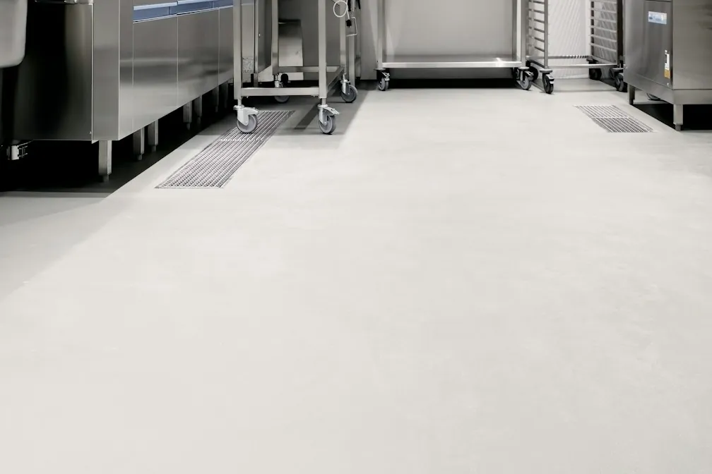

Garage, polyaspartic, metallic and commercial floor coatings for homes and businesses in San Francisco — every one installed over diamond-ground, moisture-tested concrete.
Call Now for a Free EstimateTell us about the floor and we'll call you back the same working day.
Prefer to talk? Call (415) 792-5106

Every system below starts the same way: we grind the concrete to open it up, repair cracks and spalls, and test the slab for moisture. What changes is the coating on top, chosen for how you use the space.
Garage floor epoxy replaces a dusty, stained or peeling slab with a sealed flake floor that's easy to sweep and mop. It's built for the tuck-under and tandem garages found under so many homes here, where the garage is also the laundry room and the main way into the house.
Homeowners who park inside, store bikes and boxes, or use the garage as a gym get the most out of it. Left alone, bare concrete keeps shedding dust, soaking up oil and wearing down, and failing paint keeps peeling further every year.
Call us today for garage floor epoxy in San Francisco. Read more about garage floor epoxy.
A polyaspartic floor coating cures in hours instead of days and keeps curing on cool slabs, which makes it a strong fit for foggy neighborhoods and garages that can't be out of use for long. It also stays clear in sunlight.
It's the right call for anyone who relies on the garage for parking, works around tight schedules, or has a floor that gets direct sun. Waiting out a slow epoxy cure on a cold slab can mean days without the garage and a weaker finish.
Call us today for polyaspartic floor coating in San Francisco. Read more about polyaspartic floor coating.
Metallic epoxy flooring is a decorative system where metallic pigment is worked by hand into clear epoxy, creating a glossy floor with depth and movement. It covers stained or patched concrete in lofts, studios, showrooms and finished garages.
It suits owners who want a floor that looks finished and custom, not industrial. Without a coating, bare loft and shop concrete stays stained, dusty and hard to keep clean.
Call us today for metallic epoxy flooring in San Francisco. Read more about metallic epoxy flooring.
Commercial epoxy flooring gives restaurants, breweries, retail stores and offices a seamless floor with a coved base, built to handle hot water, chemicals and cart traffic. Kitchens and washdown areas get a heavier urethane cement system.
Food businesses, shops and building owners with worn tile or crumbling concrete need it most. Ignored, broken tile and porous concrete hold grease and water, make cleaning harder and can lead to problems at inspection.
Call us today for commercial epoxy flooring in San Francisco. Read more about commercial epoxy flooring.
Grinding removes old paint and sealer and opens the concrete so the coating bonds into it. Acid etching alone isn't used as a substitute.
Cracks, pits and broken joints are filled and ground flush before coating, so the finished floor is smooth and even.
Older slabs often have no vapor barrier. A moisture test tells us whether the floor needs a moisture-blocking primer first.
Call for a free on-site estimate — we'll look at the floor and recommend the system that fits how you use it.
Call (415) 792-5106 for a Free Estimate Request an Estimate Online